Work / 2026
Quinn IT
Technology that keeps working
Quinn IT is a technology and digital services company: managed IT, managed security, and compliance work for businesses that cannot afford downtime. I built the brand from the mark up, a geometric identity in vibrant blue that holds together across 3D, motion, vehicle livery and the uniform the engineers actually turn up in.
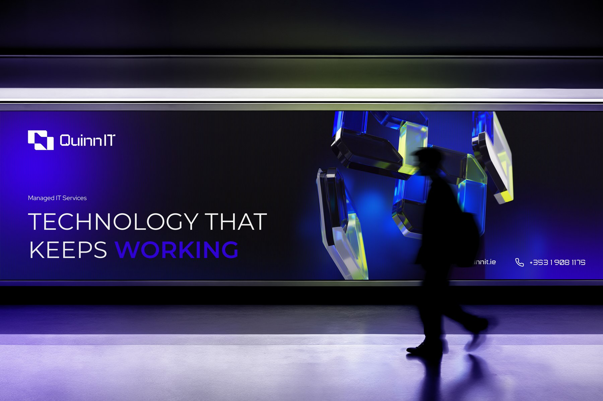
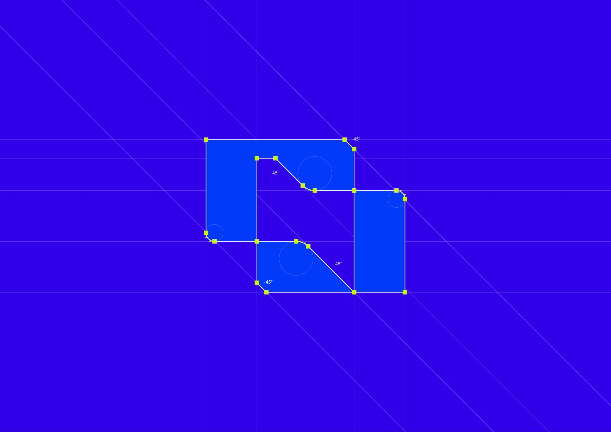
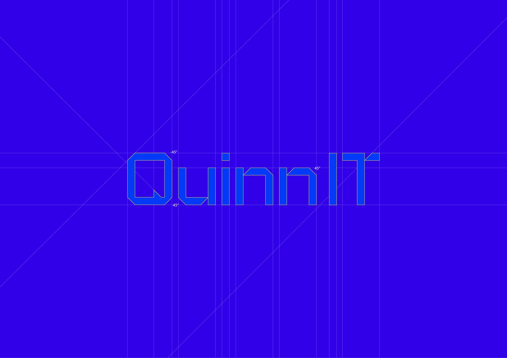
A mark you can turn
The mark is a Q built from interlocking planes rather than drawn as a letter. Read flat it is a monogram; read in three dimensions it becomes an object with depth, edges and a light source, which is what lets it live as a rotating 3D form without ever being redrawn.
Construction is geometric throughout. The mark and the wordmark are both set out on the same grid, so proportions, angles and optical spacing hold at any size, from a browser tab to the side of a van.
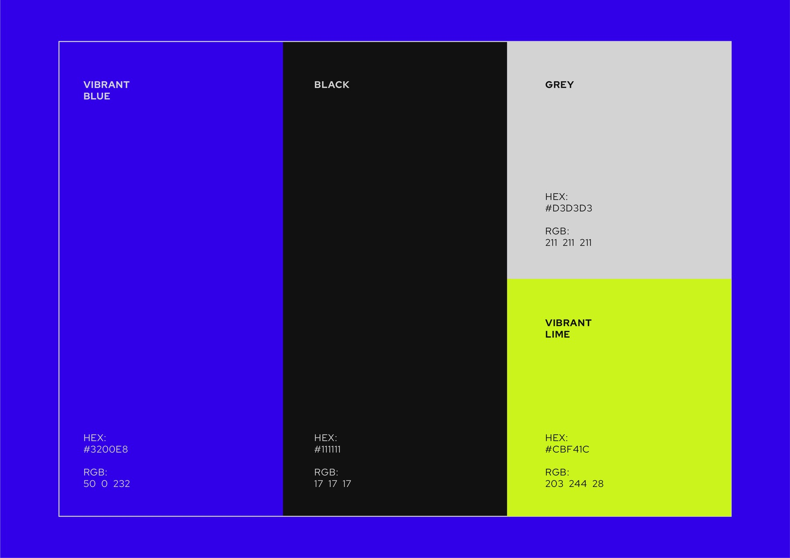
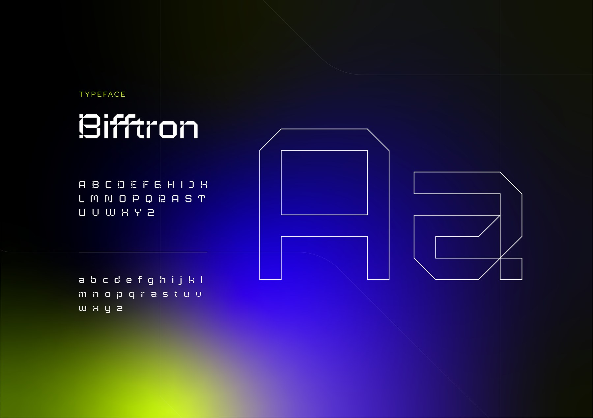
Vibrant blue, cut with lime
The palette runs on one dominant colour: a vibrant blue that is deliberately more saturated than the corporate blues the IT sector defaults to. Black and grey do the structural work, and a vibrant lime provides the accent that stops the whole thing reading as another blue technology brand.
Lime is rationed on purpose. It appears as an edge, a highlight or a single call to action rather than a second brand colour, which keeps the blue dominant and makes the accent mean something when it does appear.
Typography follows the same rule as the mark. Bifftron is squared and technical, drawn from straight cuts and right angles rather than curves, so headline type sits on the same geometry as the logo instead of arguing with it.
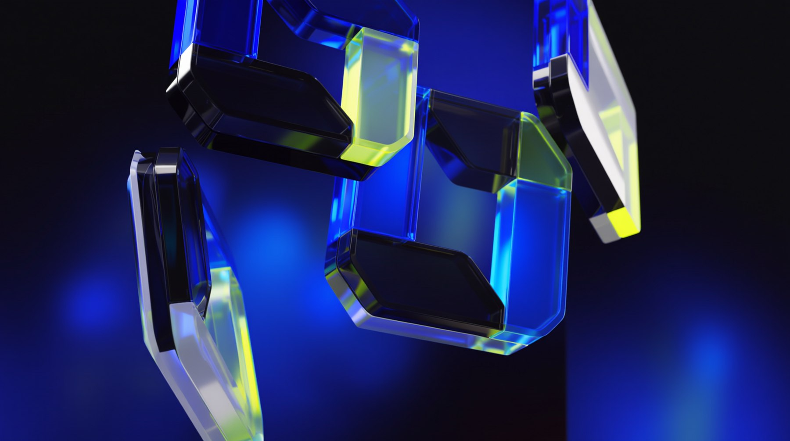
Motion as proof of depth
Because the mark was constructed as an object rather than a flat shape, it could be rendered as glass and turned in light. Refraction picks up the blue and throws the lime through it, so the animation demonstrates the brand's own palette rather than decorating with it.
The same asset covers a lot of ground: a loading state, a screen-filling moment on a stand, a social sting, or the last frame of a video. One build, used everywhere motion is needed.
Pulled in close, the same forms stop reading as a logo and start reading as material: blue glass with lime caught in the bevels. That gives the brand an abstract layer it can use as background and art direction, drawn from its own geometry rather than a stock gradient.
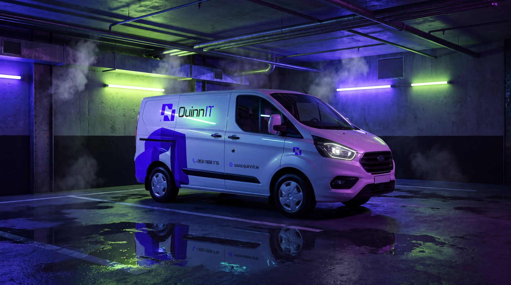
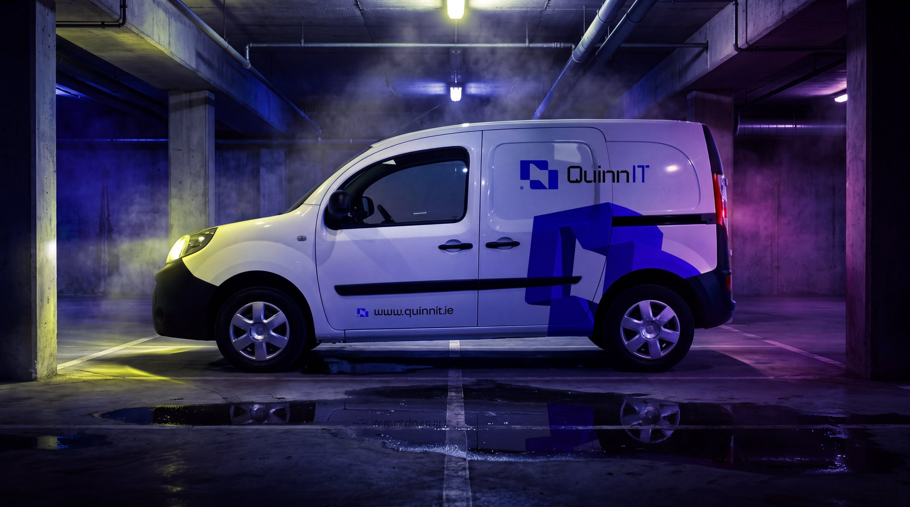
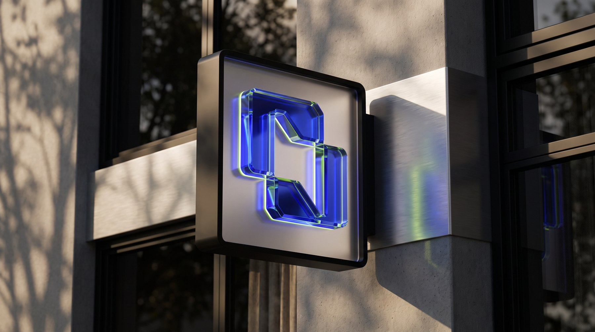
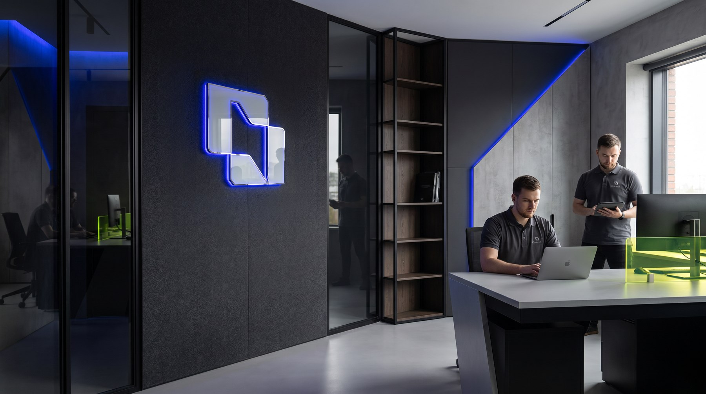
A brand that arrives in a van
For a field IT company the fleet is the most-seen piece of the identity, so the livery was designed as a considered application rather than a logo stuck on a door. The mark is used large and cropped, letting the geometry read as pattern at distance while the wordmark and web address stay legible up close.
It is drawn to work across vehicle sizes, from a full transit panel to a small van, without redrawing the artwork each time.
Signage takes the mark the other way. Lit from within and built with real depth, it turns the same geometry into an object on a wall: outside as a solid glass block catching daylight, inside as a blue-lit form that sets the tone of the room. The brand reads as permanent at the front door and on the road alike.
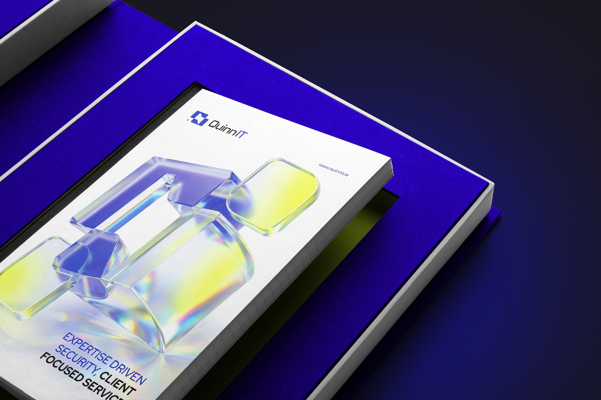
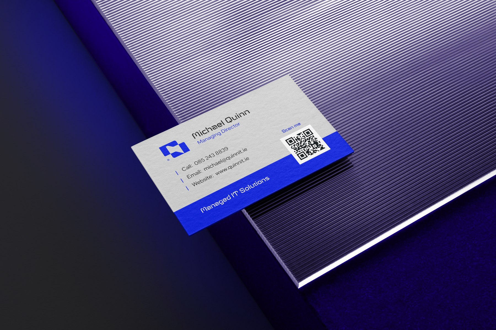
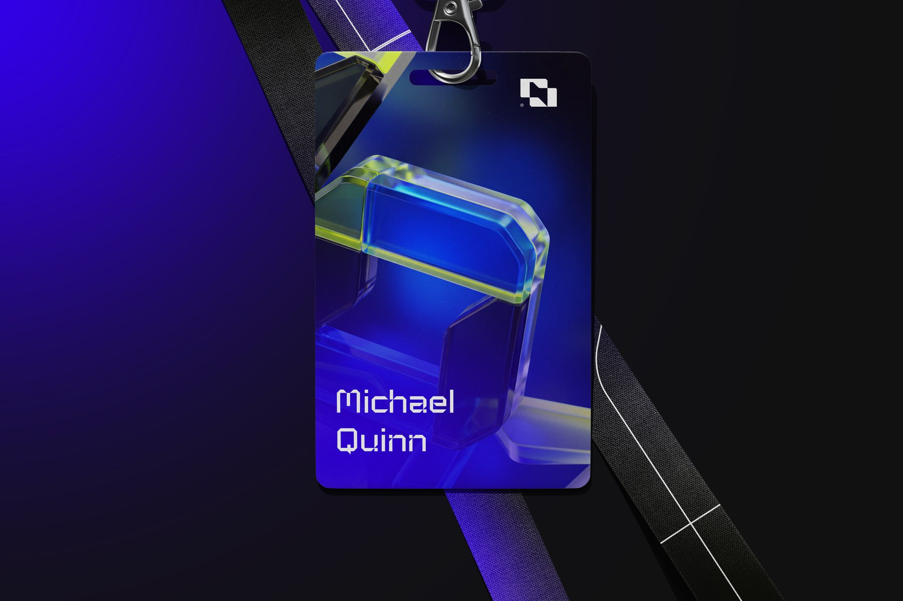
Print you can hand over
The brochure ships in a flocked blue presentation box, so the first thing a prospect handles is the brand colour at full strength before a single word is read. The cover carries the same glass render used in the 3D and motion work, which keeps the identity consistent whether it arrives on a screen or across a table.
Business cards are duplexed, grey and white against a solid blue band, with a QR straight to the site instead of a printed list of services. The only line of copy on the card is a plain statement of what the company does, which is the same restraint the rest of the system runs on.
Staff ID badges run the other way round: a full-bleed glass render, the mark small in the corner, and the engineer's name set in the brand typeface. On site that badge is often the first piece of the identity a client reads up close, so it was designed with the same care as anything that gets printed and posted.
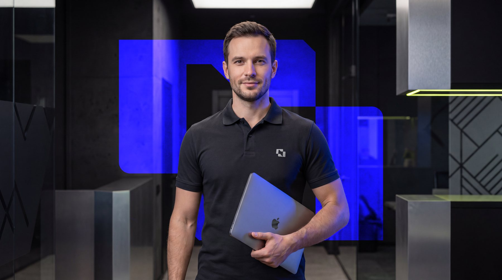
The people who turn up
The last mile of this brand is a person in a server room at eight in the morning. Uniform, laptop and on-site presence were treated as part of the identity, so the same mark that appears in the 3D animation is the one on the polo shirt in a data centre.
Photography direction follows the palette: deep blacks, hard blue light and a lime accent, so imagery of real environments still sits inside the brand world.
Process notes
How the work actually happened: the phases it moved through and the decisions that shaped it.
- 01Positioning
An IT partner judged on uptime and response, not on jargon: what the business needs to keep running.
- 02Mark & wordmark
A Q built from interlocking planes, constructed on a geometric grid alongside a bespoke wordmark.
- 03Colour & system
One dominant vibrant blue, structured with black and grey, sharpened by a rationed lime accent.
- 043D & motion
The mark rendered as glass and turned in light, giving the brand a motion asset built from its own geometry.
- 05Applied estate
Vehicle livery across two van sizes, uniform, field kit, print and photography direction.
Three decisions that shaped it
Build the mark as an object, not a shape
Most IT logos are flat and stay flat. Constructing the Q from interlocking planes meant it could be rendered in three dimensions later without redrawing anything, which is where the 3D and motion work came from. The trade-off is a mark that demands care at small sizes, so the geometry was tuned until it still reads at favicon scale.
One loud blue, one rationed accent
The category is full of safe corporate blues. I pushed the blue well past that and then held the lime back to an edge or a single call to action. A second full colour would have diluted both; used sparingly, the lime does more work and the blue stays the thing people remember.
Treat the van as a primary touchpoint
For a field service business, more people see the fleet than the website. So the livery was designed first as a large-scale graphic application, with the mark cropped to read as pattern at distance and the details kept legible up close, rather than being a logo applied to a door at the end of the project.
The brand system, distilled
Core palette and principles from the delivered identity.